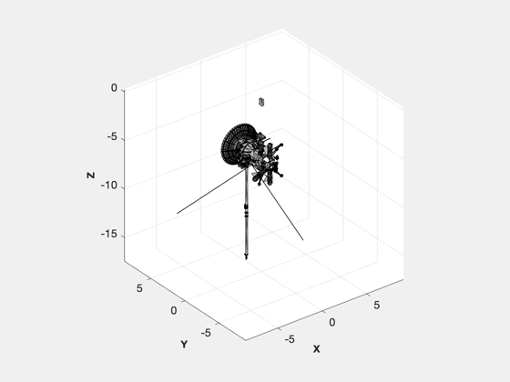
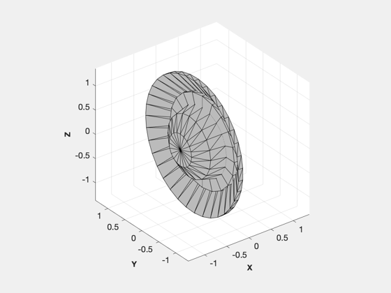
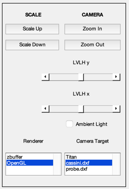
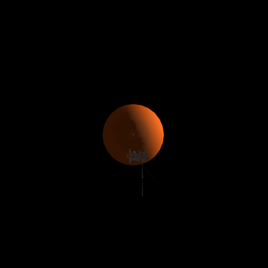

Draws a picture of the Cassini orbiter, Huygens probe, Saturn, and Titan.
The spacecraft data is taken from a .dxf file, see BuildDXF, downloaded from a JPL website which was built and is maintained by David Seal, Jet Propulsion Laboratory, NASA. The orientation and position of the spacecraft is fictitious. The spacecraft are gray since the .dxf files did not contain color data.
------------------------------------------------------------------------ See also BuildCADModel, DrawSCPlugIn ------------------------------------------------------------------------
Contents
%------------------------------------------------------------------------------- % Copyright 1998, 2015 Princeton Satellite Systems, Inc. All rights reserved. %------------------------------------------------------------------------------- % Load the Cassini and Huygens models from mat-files %--------------------------------------------------- gCassini = load('Cassini'); gHuygens = load('Huygens'); % Cassini %-------- BuildCADModel('initialize'); BuildCADModel('set units', 'mks'); BuildCADModel('set external model',gCassini) gCassiniOrbiter = BuildCADModel( 'get cad model' ); DrawCAD(gCassiniOrbiter); % Huygens %------- BuildCADModel('initialize'); BuildCADModel('set units', 'mks'); BuildCADModel('set external model',gHuygens) gHuygensProbe = BuildCADModel( 'get cad model' ); DrawCAD(gHuygensProbe); BuildCADModel('quit'); g = [gCassiniOrbiter gHuygensProbe]; 
Draw them near Titan using DrawSCPlugIn
jD0 = Date2JD([2015 1 1]); g(1).rECI = [30000;0;0]; g(1).qLVLH = QLVLH([1;0;0],[0;1;0]); g(2).rECI = [30000;0;0]; g(2).qLVLH = QLVLH([1;0;0],[0;1;0]); DrawSCPlugIn( 'initialize', g, [], [], 'Titan', jD0 ); %--------------------------------------
ALim: [0 2]
ALimMode: 'auto'
AlphaScale: 'linear'
Alphamap: [1×64 double]
AmbientLightColor: [1 1 1]
BeingDeleted: off
Box: off
BoxStyle: 'back'
BusyAction: 'queue'
ButtonDownFcn: ''
CLim: [0 20]
CLimMode: 'auto'
CameraPosition: [0 0 4.2e+07]
CameraPositionMode: 'manual'
CameraTarget: [0 0 30000000]
CameraTargetMode: 'manual'
CameraUpVector: [0 1 0]
CameraUpVectorMode: 'manual'
CameraViewAngle: 30
CameraViewAngleMode: 'manual'
Children: [273×1 Graphics]
Clipping: on
ClippingStyle: '3dbox'
Color: [0 0 0]
ColorOrder: [7×3 double]
ColorOrderIndex: 1
ColorScale: 'linear'
Colormap: [21×3 double]
ContextMenu: [0×0 GraphicsPlaceholder]
CreateFcn: ''
CurrentPoint: [2×3 double]
DataAspectRatio: [1 1 1]
DataAspectRatioMode: 'manual'
DeleteFcn: ''
FontAngle: 'normal'
FontName: 'Helvetica'
FontSize: 10
FontSizeMode: 'auto'
FontSmoothing: on
FontUnits: 'points'
FontWeight: 'normal'
GridAlpha: 0.15
GridAlphaMode: 'auto'
GridColor: [0.15 0.15 0.15]
GridColorMode: 'auto'
GridLineStyle: '-'
HandleVisibility: 'on'
HitTest: on
InnerPosition: [0 0 340 340]
Interactions: [1×1 matlab.graphics.interaction.interface.DefaultAxesInteractionSet]
Interruptible: on
LabelFontSizeMultiplier: 1.1
Layer: 'bottom'
Layout: [0×0 matlab.ui.layout.LayoutOptions]
Legend: [0×0 GraphicsPlaceholder]
LineStyleOrder: '-'
LineStyleOrderIndex: 1
LineWidth: 0.5
MinorGridAlpha: 0.25
MinorGridAlphaMode: 'auto'
MinorGridColor: [0.1 0.1 0.1]
MinorGridColorMode: 'auto'
MinorGridLineStyle: ':'
NextPlot: 'replace'
NextSeriesIndex: 1
OuterPosition: [-44.2 -37.4 416.5 402.9]
Parent: [1×1 Figure]
PickableParts: 'visible'
PlotBoxAspectRatio: [1 1 6.4152]
PlotBoxAspectRatioMode: 'manual'
Position: [0 0 340 340]
PositionConstraint: 'innerposition'
Projection: 'perspective'
Selected: off
SelectionHighlight: on
SortMethod: 'depth'
Tag: 'Spacecraft'
TickDir: 'out'
TickDirMode: 'auto'
TickLabelInterpreter: 'tex'
TickLength: [0.01 0.025]
TightInset: [0 0 0 0]
Title: [1×1 Text]
TitleFontSizeMultiplier: 1.1
TitleFontWeight: 'bold'
Toolbar: [1×1 AxesToolbar]
Type: 'axes'
Units: 'pixels'
UserData: []
View: [0 90]
Visible: off
XAxis: [1×1 NumericRuler]
XAxisLocation: 'bottom'
XColor: [0.15 0.15 0.15]
XColorMode: 'auto'
XDir: 'normal'
XGrid: on
XLabel: [1×1 Text]
XLim: [-2575000 2575000]
XLimMode: 'auto'
XMinorGrid: off
XMinorTick: off
XScale: 'linear'
XTick: [-2000000 0 2000000]
XTickLabel: {3×1 cell}
XTickLabelMode: 'auto'
XTickLabelRotation: 0
XTickMode: 'auto'
YAxis: [1×1 NumericRuler]
YAxisLocation: 'left'
YColor: [0.15 0.15 0.15]
YColorMode: 'auto'
YDir: 'normal'
YGrid: on
YLabel: [1×1 Text]
YLim: [-2575000 2575000]
YLimMode: 'auto'
YMinorGrid: off
YMinorTick: off
YScale: 'linear'
YTick: [-2000000 0 2000000]
YTickLabel: {3×1 cell}
YTickLabelMode: 'auto'
YTickLabelRotation: 0
YTickMode: 'auto'
ZAxis: [1×1 NumericRuler]
ZColor: [0.15 0.15 0.15]
ZColorMode: 'auto'
ZDir: 'normal'
ZGrid: on
ZLabel: [1×1 Text]
ZLim: [-2575000 3.0464e+07]
ZLimMode: 'auto'
ZMinorGrid: off
ZMinorTick: off
ZScale: 'linear'
ZTick: [0 10000000 20000000 30000000]
ZTickLabel: {4×1 cell}
ZTickLabelMode: 'auto'
ZTickLabelRotation: 0
ZTickMode: 'auto'
 